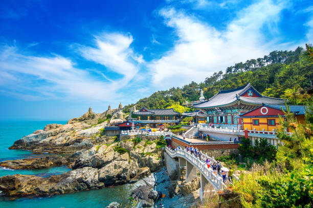

Sua proxima viagem:
Conheça Busan

Busan, a estrela em ascensão da Coreia do Sul, oferece de tudo, desde churrascarias de primeira linha até tradicionais barracas de comida de rua. Aqui, exploramos a segunda cidade da coreia do Sul e descobrimos suas ofertas culinarias
para os amantes de historia
Descubra 3 destinos imperdiveis em busan
As atrações de Busan vão desde templos budistas centenários até praias deslumbrantes e mercados vibrantes. A cidade é conhecida pelo seu impressionante Templo Beomeosa, um exemplo notável da arquitetura tradicional, e pela vibrante Haeundae Beach, ideal para relaxar e desfrutar do sol. O Mercado de Jagalchi oferece uma experiência autêntica com frutos do mar frescos e o Mercado de Gukje é um labirinto de lojas que vendem tudo, desde roupas a lembranças. Busan combina a rica herança cultural com a modernidade vibrante, tornando-a um destino imperdível na Coreia do Sul.
1. Templo Haedong Yonggungsa
O templo Haedong Yonggungsa é um templo budista localizado no extremo nordeste de Busan. Construido em 1376, é um dos poucos templos na Coreia construidos á beira-mar - você pode desfrutar de vistas do Mar do Leste de um lado e de belas montanhas do outro.
Bom para:
- Historia
2. Templo de Beomeo-sa
O templo Beomeo-sa é um dos maiores santuários d Coreia do Sul. Ele está localizado no alto da borde leste da montanha Geumjeongsa e fica distante da agitação da cidade. o Daeungjeon Hall do templo é um exemplo bem preservado da arquitetura da Dinastia Joseon
Bom para:
- Historia
3. Parque Yongdusan
O Parque Yongdusan, localizado no centro de Busan, é um refúgio verde encantador que oferece vistas panorâmicas da cidade e do porto. Este parque é conhecido por sua Torre de Yongdusan, um marco icônico que proporciona uma vista espetacular da cidade e do mar. Além disso, o parque abriga o monumento ao fundador da Coreia, um pagode tradicional e várias áreas de lazer, tornando-o um local popular tanto para moradores quanto para turistas. Com seus jardins bem cuidados e espaços tranquilos, o Parque Yongdusan é o lugar ideal para relaxar e apreciar a beleza de Busan.
Bom para:
- Casais
- Familias
- Orçamento
As melhores coisas pra fazer em busan mostram a reputação da cidade como um importante porto maritimo na Ásia. Frequentemente vista como a assência da Coreia do Sul. Você experimentara uma atmosfera unica em termos de diversidade étnica e cultura, ja que a cidade recebe um publico cosmopolita o ano todo.